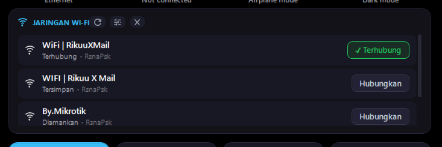
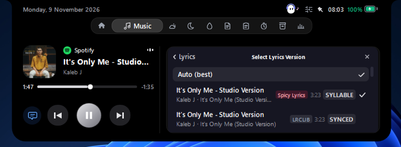
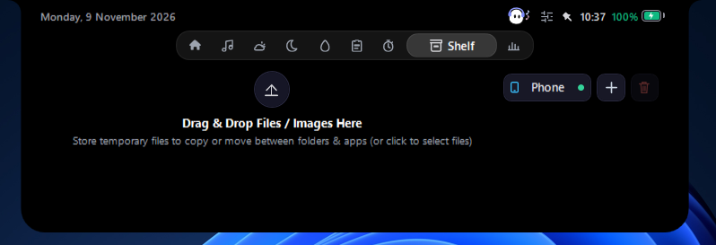
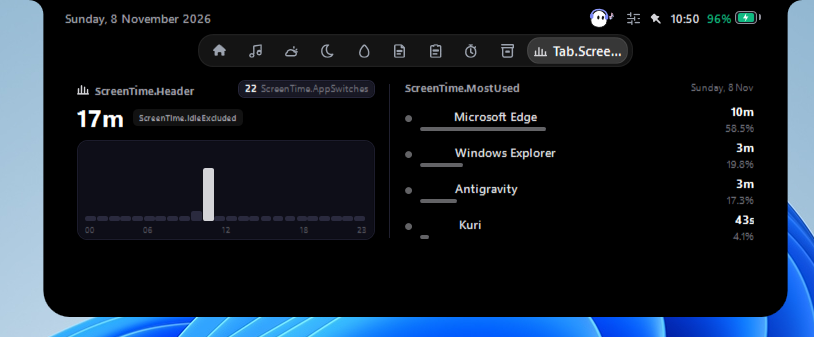

Direct Control Center
Manage Wi-Fi networks, Bluetooth devices, and audio outputs directly inside the notch with fixed 128px scrollable lists and zero oversized popups or clipped buttons.

Music, syllable-synced lyrics, real-time BMKG weather, in-notch Control Center, focus timer, and a drag-and-drop shelf — seamlessly tucked into the top edge of your monitor.
Give your desktop a charming soul. Switch anytime between four unique companions.

Minimalist, highly expressive twin pill eyes that live directly inside the notch contour. Automatically centers when your notch is idle, blinks with lifelike micro-physics, and shifts smoothly when media plays.
Engineered in .NET 8 WPF to turn wasted bezel space into high-velocity productivity.
Manage Wi-Fi networks, Bluetooth devices, and audio outputs directly inside the notch with fixed 128px scrollable lists and zero oversized popups or clipped buttons.

Integrates directly with lrc.red and Spotify TTML streams to highlight lyrics word-by-word with smooth karaoke gradient glow.

Drag any image, document, or code snippet up to the notch to hold it temporarily. Send it directly to your phone via local QR Wi-Fi without cables.

Live forecasts directly from BMKG. Displays localized temperature, precipitation probability, and weather conditions for hundreds of Indonesian districts.

Windows Defender might show a blue prompt when you first open the installer. Here is why that happens and how to proceed.
Microsoft Defender SmartScreen prevented an unrecognized app from starting. Running this app might put your PC at risk.
Commercial software companies pay thousands of dollars annually for Microsoft EV Code Signing certificates. As an open-source project by independent developers, Kuri is signed with community keys.
Download the standalone executable or installer package. Compatible with 64-bit Windows 11 and Windows 10.